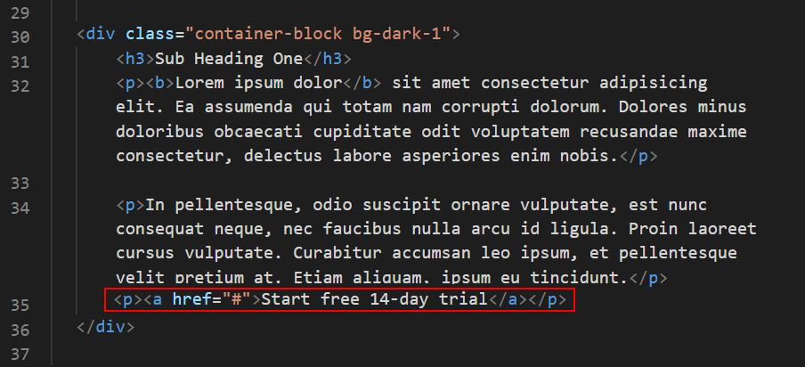
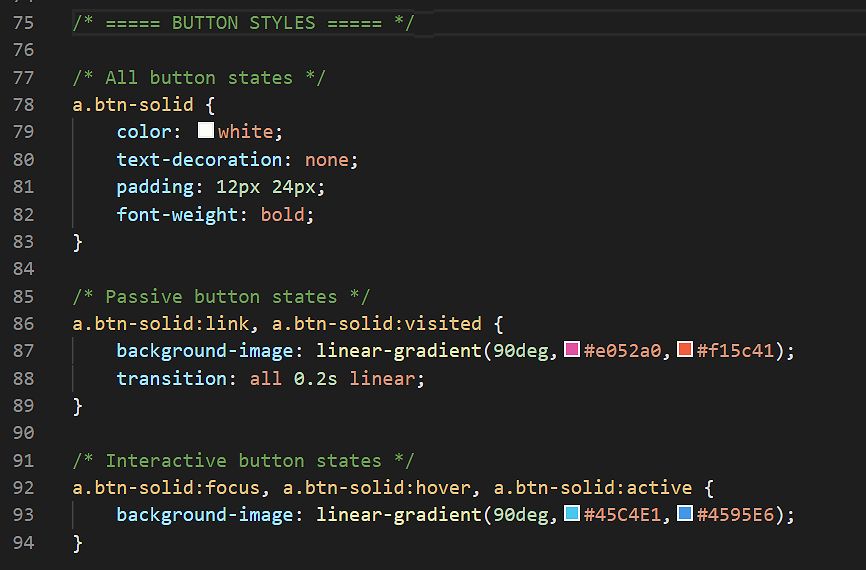
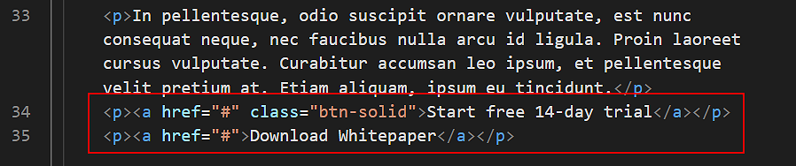
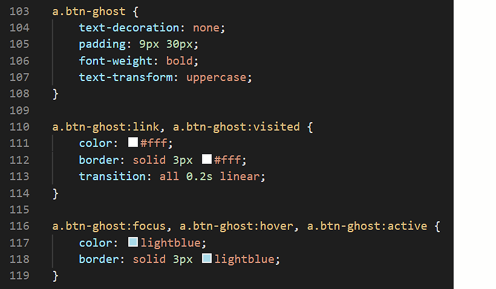

Learning Goals
At the end of this Tutorial you will be able to:
- Style hyperlinks as buttons with solid colour or transparent backgrounds.
- Apply soft corners and rounded edges to hyperlinks styled as buttons.
You can view finished versions of the two sample web pages you will update with hyperlinks in this Tutorial by clicking the links below. The finished samples will each open in a new tab of your web browser.
Adding buttons to your first sample web page
In this section you will add a button-styled hyperlink to the page-11.html sample web page in your websites folder.
- In VS Code, open the page-11.html web page and style-11.css stylesheet.
- In the page-11.html file, after the introduction, and at the end of the second paragraph in the first section, add the following new paragraph which contains a hyperlink.
<p><a href="#">Start free 14-day trial</a></p>
Your web page should now look as shown below.

- Next, add a class with the name of btn-solid to the hyperlink.
<p><a href="#" class="btn-solid">Start free 14-day trial</a></p>
- Now, switch to the style-11.css stylesheet.
- At the bottom of the stylesheet, copy-and-paste the following three sets of style rules for the btn-solid class:
a.btn-solid {
}
a.btn-solid:link, a.btn-solid:visited {
}
a.btn-solid:focus, a.btn-solid:hover, a.btn-solid:active {
}
Why three sets of style rules?
- The first set of style rules will always apply to the button – regardless of its state.
- The second will apply only to the button’s passive state, and
- The third will apply only to the button’s interactive state.
- To the first set of style rules, copy-and-paste the following pairs of CSS properties and values:
color: white;
text-decoration: none;
padding: 12px 32px;
font-weight: bold;
text-transform: uppercase;
- To the second set of style rules for the button’s passive states, copy-and-paste the following pairs of CSS properties and values:
background-image: linear-gradient(90deg,#e052a0,#f15c41);
transition: all 0.2s linear;
- To the third set of style rules for the button’s interactive states, copy-and-paste the following CSS property and value:
background-image: linear-gradient(90deg,#45C4E1,#4595E6);
Your complete set of CSS styles for the .btn-solid class should now look as follows.

- Save the page-11.html web page and style-11.css stylesheet.
- In your web browser, the passive and interactive button states should now look similar to those below.
You have now added your first hyperlink-styled button to your sample web page.
Click page-11.html to view a finished sample of this web page in a new tab of your web browser.
Now you will add and style a second button to your sample web page.
- In the page-11.html file, directly under the button you previusly added, add the following second button.
<p><a href="#">Download Whitepaper</a></p>
Your web page should now look as shown below.

- Next, add a class with the name of btn-ghost to the hyperlink.
<p><a href="#" class="btn-ghost">Download Whitepaper</a></p>
- Now, switch to the style-11.css stylesheet.
- At the bottom of the stylesheet, copy-and-paste the following three sets of style rules for the btn-solid class:
a.btn-ghost {
}
a.btn-ghost:link, a.btn-solid:visited {
}
a.btn-ghost:focus, a.btn-ghost:hover, a.btn-ghost:active {
}
- To the first set of style rules, copy-and-paste the following pairs of CSS properties and values:
text-decoration: none;
padding: 12px 32px;
font-weight: bold;
text-transform: uppercase;
- To the second set of style rules for the button’s passive states, copy-and-paste the following pairs of CSS properties and values:
color: #fff;
border: solid 3px #fff;
transition: all 0.2s linear;
- To the third set of style rules for the button’s interactive states, copy-and-paste the following CSS property and value:
color: lightblue;
border: solid 3px lightblue;
Your complete set of CSS styles for the .btn-ghost class should now look as follows.

- Save the page-11.html web page and style-11.css stylesheet.
- In your web browser, the passive and interactive button states should now look similar to those below.
You have now added a second hyperlink-styled button to your sample web page.
Click page-11.html to view a finished sample of this web page in a new tab of your web browser.
In the following steps you will create two new classes in CSS to control the shape of hyperlinks styled as buttons.
- In your page-11.html file, add the following two new classes to your first and second buttons.
<p><a href="#" class="btn-solid btn-soft ">Start free 14-day trial</a></p>
<p><a href="#" class="btn-ghost btn-rounded">Download Whitepaper</a></p>
- Now, switch to the style-11.css stylesheet.
- At the bottom of the stylesheet, copy-and-paste the following two new class selectors and their style rules.
a.btn-soft { border-radius: 5px }
a.btn-rounded { border-radius: 25px }
- Save the page-11.html web page and style-11.css stylesheet.
- In your web browser, the new button styles should look as follows.
Uploading your files to GitHub
Upload the following web page and stylesheet to your account on GitHub:
page-11.html
style-11.css
Your web page will be published at web addresses similar to the following:
https://username.github.io/page-11.html
It may take a few minutes for your uploaded files to appear on GitHub.